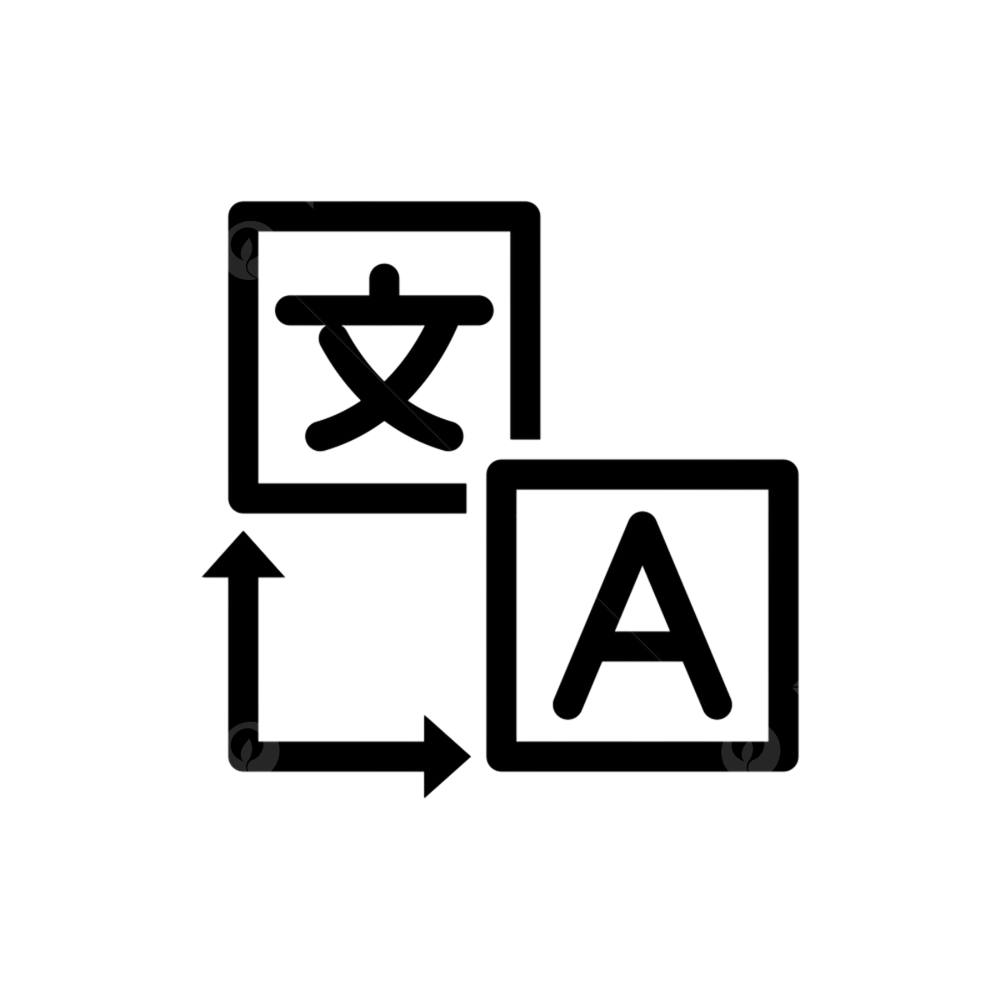

|
|
 |
Federico D'AmatoSOFTWARE ENGINEER AND SECURITY ANALYST |
331 953 2325
fededama2007@gmail.com
federicodamato.000webhostapp.com
Innovative, laborious and professional. Specialized in computer engineering and cyber security. Ambitious and enthusiastic to continue growing and evolving in the profession. In constant search for new skills and skills.
Programming of software and operating systems. Capacity for web and mobile development. Knowledge for the assessment of threats and vulnerabilities of security architectures, including the documentation of potential risks and preparation of cybernetic risk management plans.
Italian - native speaker
English - Intermediate
Available on request
Polytechnic University of Milan - Computer Engineering (2026/2031)
University of Milan - Data Protection, Training of Ciso and DPO (2031/2032)
First Lego League 2023/2024
My responsibilities consisted of observing and learning the different job possibilities of the IT area present in the company. Continuing, I had the opportunity to actively participate in some tasks concerning the management and maintenance of computer equipment and websites.
My responsibilities consisted in maintaining the correct functioning of the company's web platform. Sometimes I also held the role of software tester, ensuring the correct functioning of certain codes necessary for the correct functioning of the instruments.
My responsibilities were part of the role of penetration testing, managing the tests for the security of IT systems. Furthermore, I dealt with the identification of vulnerabilities in systems and processes and I evaluated the level of risk, advising on corrective measures.